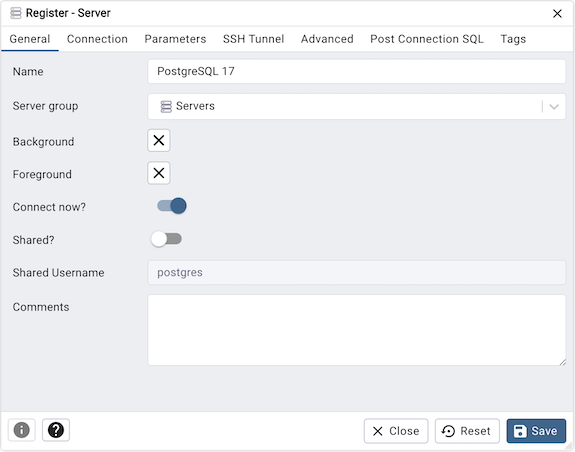
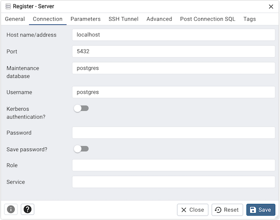
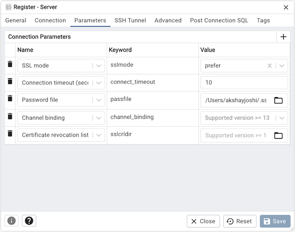
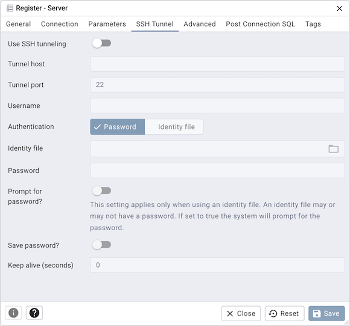
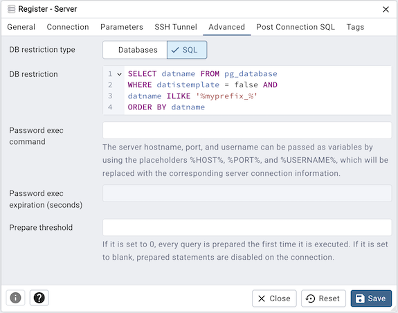
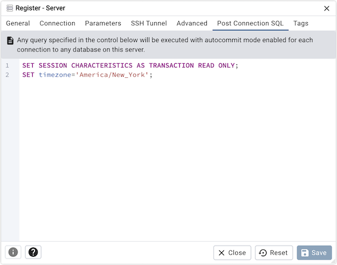
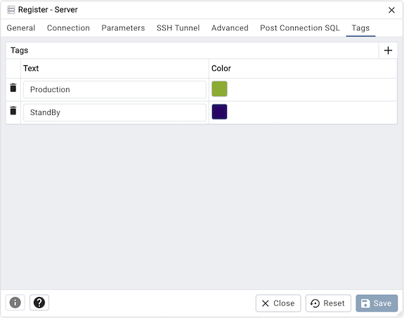

Server Dialog¶
Use the Server dialog to describe a connection to a server. Note: you must ensure that the pg_hba.conf file of the server from which you are connecting allows connections from the host of the client.

Use the fields in the General tab to identify the server:
Use the Name field to add a descriptive name for the server; the name specified will be displayed in the Object Explorer.
Use the drop-down list box in the Server group field to select the parent node for the server; the server will be displayed in the Object Explorer control within the specified group.
Use the color-picker in the Background field to specify the background color for the server.
Use the color-picker in the Foreground field to specify the foreground color for the server.
If the Connect now? checkbox is checked, the client will attempt a connection to the server upon completion of the dialog; this is the default
If the Shared? switch is moved to Yes then that server can be shared with all the other users. This option is available only to admin users. For more information on users see User Management Dialog. Sharing a server, whether in this dialog, through the API or by importing a servers.json file, is restricted to users with the Administrator role. Servers that were shared by non-administrator users before this restriction was introduced remain shared until they are un-shared, so administrators should audit them: look for servers with the shared flag set in the configuration database whose owner does not have the Administrator role. pgAdmin logs a warning for each such server when it starts in server mode. Such a server can be un-shared by its owner through the server API (a PUT request on the server with
"shared": false), or by an administrator changing thesharedcolumn of the server record in the pgAdmin configuration database. The Shared? switch in this dialog is shown only to administrators, and only the owner of a server can change it. Users can access the shared servers with some restrictions - the following operations on shared servers are not permitted:Delete the server
Rename the server
Rename the group server
Change of host, port, and maintenance database
Each user of a shared server has their own copy of some of its settings. Tags, colours, the role and the service name are copied from the owner the first time a user opens the server, and each user can then change their copy. The host, port, maintenance database and the general connection parameters (such as connect_timeout or sslmode) always come from the owner’s server definition, so a change the owner makes to them is seen by every user. The owner’s password, SSH tunnel credentials, SSL certificate, key and CRL paths, and password file (passfile) are never shared: each user must supply their own in the server dialog if they need them.
Please note that once the server is shared, it’s icon is changed in the object explorer.
Use the Shared Username field to fill the username of the shared server connection. By default, it will take the username of the server being shared.
Provide a comment about the server in the Comments field.
Click the Connection tab to continue.

Use the fields in the Connection tab to configure a connection:
Specify the IP address of the server host, or the fully qualified domain name in the Host name/address field. If you provide a unix domain socket, the directory name must begin with a “/”.
Enter the listener port number of the server host in the Port field. The default is 5432.
Use the Maintenance database field to specify the name of the initial database to which the client will connect. If you will be using pgAgent or adminpack objects, the pgAgent schema and adminpack objects should be installed on that database.
Use the Username field to specify the name of a role that will be used when authenticating with the server.
When Kerberos authentication? is set to True, pgAdmin will try to connect the PostgreSQL server using Kerberos authentication.
Use the Password field to provide a password that will be supplied when authenticating with the server.
Check the box next to Save password? to instruct pgAdmin to save the password for future use. Use Clear Saved Password to remove the saved password.
Use the Role field to specify the name of a role that has privileges that will be conveyed to the client after authentication with the server. This selection allows you to connect as one role, and then assume the permissions of this specified role after the connection is established. Note that the connecting role must be a member of the role specified.
Use the Service field to specify the service name. For more information, see Section 33.16 of the Postgres documentation.
In server mode, services are read from the connection service file of the account that pgAdmin runs as, so a server can use only a service that the administrator has listed in the
SERVER_MODE_ALLOWED_SERVICESsetting (see Configuration Files), which is empty by default. A server that uses any other service cannot be saved, and an existing one fails to connect with an error naming the setting. Listing a service shares its credentials, such as a password in its entry, with every pgAdmin user. Theservicefileconnection parameter cannot be used in server mode, and pgAdmin ignores anyPGPASSWORDorPGSERVICEenvironment variable set for the account it runs as.
Click the Parameters tab to continue.

Use the fields in the Parameters tab to configure a connection:
Click on the + button to add a new parameter. Some of the parameters are:
Host address using this field to specify the host IP address may save time by avoiding a DNS lookup on connection, but it may be useful to specify both a host name and address when using Kerberos, GSSAPI, or SSPI authentication methods, as well as for verify-full SSL certificate verification.
Password File field to specify the location of a password file (.pgpass). A .pgpass file allows a user to login without providing a password when they connect. For more information, see Section 33.15 of the Postgres documentation.
Connection timeout field to specify the maximum wait for connection, in seconds. Zero or not specified means wait indefinitely. It is not recommended to use a timeout of less than 2 seconds. By default it is set to 10 seconds.
Require authentication (require_auth) field to specify the authentication methods the server may use. In server mode, pgAdmin refuses the GSSAPI and SSPI methods for a connection that may not use Kerberos, as described in Enabling Kerberos Authentication.
SSL mode field to select the type of SSL connection the server should use. For more information about using SSL encryption, see Section 33.18 of the Postgres documentation.
If pgAdmin is installed in Server mode (the default mode), you can use the platform-specific File manager dialog to upload files that support SSL encryption to the server. To access the File manager dialog, click the icon that is located to the right of each of the following fields.
Client certificate field to specify the file containing the client SSL certificate. This file will replace the default ~/.postgresql/postgresql.crt if pgAdmin is installed in Desktop mode, and <STORAGE_DIR>/<USERNAME>/.postgresql/postgresql.crt if pgAdmin is installed in Web mode. This parameter is ignored if an SSL connection is not made.
Client certificate key field to specify the file containing the secret key used for the client certificate. This file will replace the default ~/.postgresql/postgresql.key if pgAdmin is installed in Desktop mode, and <STORAGE_DIR>/<USERNAME>/.postgresql/postgresql.key if pgAdmin is installed in Web mode. This parameter is ignored if an SSL connection is not made.
Root certificate field to specify the file containing the SSL certificate authority. This file will replace the default ~/.postgresql/root.crt. This parameter is ignored if an SSL connection is not made.
Certificate revocation list field to specify the file containing the SSL certificate revocation list. This list will replace the default list, found in ~/.postgresql/root.crl. This parameter is ignored if an SSL connection is not made.
SSL compression? is set to True, data sent over SSL connections will be compressed. The default value is False (compression is disabled). This parameter is ignored if an SSL connection is not made.
Warning
In Server mode, certificates, private keys, and the revocation list are stored in the per-user file storage area on the server, which is owned by the user account under which the pgAdmin server process is run. This means that administrators of the server may be able to access those files; appropriate caution should be taken before choosing to use this feature.
Note
In Server mode, every connection file path (the Password file, client certificate and key, root certificate, certificate revocation list, CRL directory and SSL key log file) must resolve inside your storage directory, or inside a SHARED_STORAGE entry (see Configuration Files) written as Name:/path. A path that leaves it through .. or a symbolic link is refused with an “Access denied (…): the path resolves outside your storage directory…” message when connecting or starting a utility. If you used a symbolic link in your storage directory to reach, for example, /etc/pgadmin/certs, configure that directory as a SHARED_STORAGE entry instead (see Storage Manager). Every pgAdmin user can use a file in shared storage, so it should hold only shareable files such as a root certificate or CRL, never a private key or a .pgpass file.
Click the SSH Tunnel tab to continue.

Use the fields in the SSH Tunnel tab to configure SSH Tunneling:
You can use the “SSH Tunnel” tab to connect pgAdmin (through an intermediary proxy host) to a server that resides on a network to which the client may not be able to connect directly.
Set “Use SSH tunneling” to Yes to specify that pgAdmin should use an SSH tunnel when connecting to the specified server.
Specify the name or IP address of the SSH host (through which client connections will be forwarded) in the Tunnel host field.
Specify the port of the SSH host (through which client connections will be forwarded) in the Tunnel port field.
Specify the name of a user with login privileges for the SSH host in the Username field.
Specify the type of authentication that will be used when connecting to the SSH host in the Authentication field:
Select the Password option to specify that pgAdmin will use a password for authentication to the SSH host. This is the default.
Select the Identity file to specify that pgAdmin will use a private key file when connecting.
If the SSH host is expecting a private key file for authentication, use the Identity file field to specify the location of the key file. In server mode, pgAdmin does not use the private keys, ssh-agent or
~/.ssh/configof the account pgAdmin runs as; the identity file must be located inside your storage directory.If the SSH host is expecting a password of the user name or an identity file if being used, use the Password field to specify the password.
Check the box next to Prompt for password? to to have pgAdmin prompt for a password if the identity file includes one. This setting applies only when using an identity file, which may or may not require a password.
Check the box next to Save password? to instruct pgAdmin to save the password for future use. Use Clear SSH Tunnel Password to remove the saved password.
Use the Keep alive field to specify interval in seconds defining the period in which, if no data was sent over the connection, a ‘keepalive’ packet will be sent (and ignored by the remote host). This can be useful to keep connections alive over a NAT. You can set to 0 for disable keepalive.
Click the Advanced tab to continue.

Use the fields in the Advanced tab to configure a connection:
Specify the type of the database restriction that will be used to filter out the databases for restriction in the DB restriction type field:
Select the Databases option to specify the name of the databases that will be used against the pg_database table to limit the databases that you see. This is the default.
Select the SQL option to provide a SQL restriction that will be used against the pg_database table to limit the databases that you see.
Use the DB restriction field to provide a SQL restriction OR Database names that will be used against the pg_database table to limit the databases that you see. For example, you might enter: live_db test_db so that only live_db and test_db are shown in the pgAdmin object explorer.
In desktop mode, use the Password exec command field to specify a shell command to be executed to retrieve a password to be used for SQL authentication. The
stdoutof the command will be used as the SQL password. This may be useful when the password should be generated as a transient authorization token instead of providing a password when connecting in PAM authentication scenarios. You can pass server hostname, port and DB username to the password exec command as variable by providing placeholders like%HOSTNAME%,%PORT%and%USERNAME%which will be replace with the server connection information. Example:/path/to/script --hostname %HOSTNAME% --port %PORT% --username %USERNAME%In server mode, use the Password exec command drop-down list to select one of the commands that the administrator has defined in the
SERVER_PASSEXEC_COMMANDSsetting (see Configuration Files). Users cannot enter their own command. The list offers None and each configured command name, and is hidden if no commands have been configured. On a shared server, users who do not own the server also see Inherit from owner, which is the default for them and uses whatever command the owner has selected; selecting None or a named command overrides it for that user only. If a selected command is later removed from the configuration, the server is treated as having no command and a warning is logged.The command is run directly, without a shell, and does not receive the full environment of the pgAdmin process. Only
PATH,HOME,LANG,LANGUAGE,TZ,TMPDIR,TMP,TEMP,USER,LOGNAMEand anyLC_*variable are passed through (and, on Windows,SYSTEMROOT,SYSTEMDRIVE,PATHEXT,COMSPECandWINDIR), together with any variables the administrator has named in theSERVER_PASSEXEC_ENV_PASSTHROUGHsetting. The command also receives the following variables describing the connection, which take precedence over any variable of the same name:PGADMIN_PASSEXEC_HOST,PGADMIN_PASSEXEC_PORT,PGADMIN_PASSEXEC_USERNAME(the username that connection uses, so a non-owner’s own username on a shared server),PGADMIN_PASSEXEC_DATABASE(the maintenance database),PGADMIN_PASSEXEC_PGADMIN_USER(the pgAdmin user making the connection) andPGADMIN_PASSEXEC_AUTH_SOURCE(how that user authenticated to pgAdmin). Thestdoutof the command is used as the SQL password.Use the Password exec expiration field to specify a maximum age, in seconds, of the password generated with a Password exec command. In server mode, this field is enabled only when a named command is selected. If not specified, the password will not expire until your pgAdmin session does. Zero means the command will be executed for each new connection or reconnection that is made. If the generated password is not valid indefinitely, set this value to slightly before it will expire.
Use the Prepare threshold field to specify the number of times a query is executed before it is prepared. If it is set to 0, every query is prepared the first time it is executed. If it is set to blank, prepared statements are disabled on the connection. This is particularly useful with external connection poolers, such as PgBouncer, which is not compatible with prepared statements. Set this to blank in such cases.
Note
The password file option is only supported when pgAdmin is using libpq v10.0 or later to connect to the server.
Note
In server mode, the Password exec command setting is available
only when the administrator has defined at least one command in
SERVER_PASSEXEC_COMMANDS. Free-text commands are never run in server
mode, and when pgAdmin is upgraded, an existing free-text command is kept
only if it exactly matches a configured command (its arguments joined by
single spaces), in which case it is converted to that command’s name; all
others are cleared and a warning is logged. This conversion cannot be
undone, so SERVER_PASSEXEC_COMMANDS must be configured before the
first start after upgrading. If it is still empty at that point, the
conversion is postponed: existing commands are left in the configuration
database unused, a warning giving the number of affected servers is
logged at each start, and they are converted or cleared on the first
start at which at least one command is configured. Placeholders such as
%HOSTNAME%, %PORT% and %USERNAME% are not substituted in
server mode, so a command containing them is converted only if the
configured arguments contain the same literal text. On a shared server, a
user who does not own the server and whose own command is cleared will
then inherit the owner’s command, if the owner has one. The
ENABLE_SERVER_PASS_EXEC_CMD setting is deprecated and ignored.
Warning
In server mode, only PGADMIN_PASSEXEC_PGADMIN_USER and
PGADMIN_PASSEXEC_AUTH_SOURCE identify the pgAdmin user on whose behalf
the command is run. PGADMIN_PASSEXEC_HOST, PGADMIN_PASSEXEC_PORT,
PGADMIN_PASSEXEC_USERNAME and PGADMIN_PASSEXEC_DATABASE are set by
whoever edits the server definition; on a shared server, a user who does
not own the server sets their own username. Commands should therefore
decide whether to issue a password based on the pgAdmin identity, and
treat the other four variables as untrusted input.
Click the Post Connection SQL tab to continue.

Use the Post Connection SQL field to write the SQL queries that will be executed in autocommit mode for each connection made to any database on this server.
Click the Tags tab to continue.

Use the table in the Tags tab to add tags. The tags will be shown on the right side of a server node label in the object explorer tree.
- Click on the + button to add a new tag. Some of the parameters are:
Text field to specify the tag name.
Color field to select the accent color of the tag.
Click the Save button to save your work.
Click the Close button to exit without saving your work.
Click the Reset button to return the values specified on the Server dialog to their original condition.